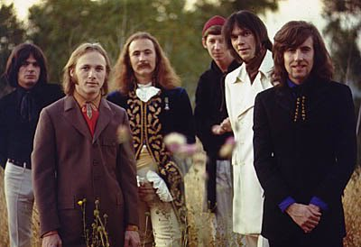
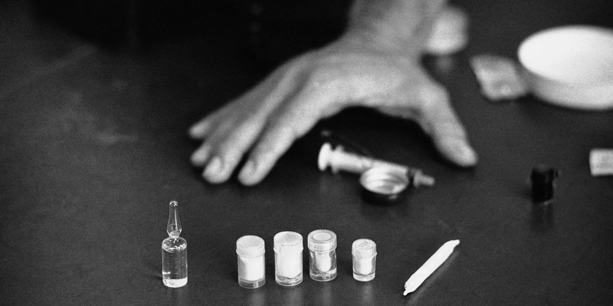

- CAREER -
Though Bruce Berry’s brother’s musical career was certainly a success, it paled in comparison to those of the bands and artists that Bruce worked with as a roadie. In his short career he toiled under the likes of Neil Young, David Crosby, Steven Stills, and Graham Nash, all widely influential artists responsible for numerous multi-platinum records. Stephen Stills penned famous protest song For What Its Worth, while Young was responsible for the equally powerful Ohio. Be it together or apart, the four men were amongst the most prominent and prolific musical voices of the mid 60’s and early 70’s, standing alongside the likes of Bob Dylan, Joni Mitchel, and Grace Slick.
Bruce Berry, on the other hand, was a simple roadie and a low level one at that. Despite the extraordinary success that seemed to surround him, his career was spent as a glorified musician’s servant, hauling their equipment and scoring them drugs. In 1968 Bruce along with two best friends, Guillermo Giachetti and Richard O’Connell, started working at his brother’s music store/studio S.I.R. Soon after, they banded together to form a roadie company of sorts as ‘the Three Musketeers’. Through the connections of Bruce’s brother and the music store, they soon ended up working regular gigs with the then super group Crosby, Stills, Nash & Young. None of the ‘Musketeers’ were particularly skilled laborers, so they ended up taking on all kinds of simple odd jobs for the band members. Giachetti, for instance, spent time working on Neil Young’s ranch. Bruce quickly became known for hauling equipment in his trademark Ford Econoline van; a van gifted to him by his other brother Ken Berry. He also became a regular deliverer of narcotics to various band members. Bruce was well liked by the band, Young in particular, who remembered Bruce as “kind and always smiley”. Consequently, when the members would split temporarily, usually to pursue solo work, Bruce and his crew were still kept on and traded around by the band members.
- BERRY'S DRUG ADDICTION -
It was during one of the splits of the super group Crosby, Stills, Nash, and Young, that Bruce embarked on his ‘junkie’s spiral’ that would go on to so thoroughly define his life. Berry’s descent was a tragedy so clichéd that it would have fit perfectly into an afterschool special about the dangers of drugs. In 1971 Stills went over to England to form his new band, Manassas. Neil lent Stills Berry and then later Giachetti. While Berry was in England, he was introduced to heroin by then Crazy Horse (Neil Young’s backing band) guitarist Danny Whitten. Bruce was initially proud of his experimentation, bragging to O’Connell “Hey Richie, you’ll never guess what I just did”. His addiction to the substance shortly followed.
When he came back from England he was “a changed guy” according to O’Connell. Berry quickly became known as a degenerate junkie to both his friends and employers. He was soon notorious for his thievery in support of his addiction and his debauched antics while on dope. He would often con his friends, selling them bum drugs so he could go out and score for himself. Though his most notable instance of theft was when he hawked David Crosby’s Stratocaster for heroin. Reportedly, Bruce told Crosby “Hey, somebody broke into the trunk of your car and stole your Stratocaster”, but Crosby claimed, “Well, nobody broke into my car. Bruce had sold it for junk”. When high, Berry was rarely pleasant to be around. In one instance he got stoned out of his mind and somehow ended up in O’Connell’s home, wreaking havoc. According to O’Connell, “I come home and there’s fuckin’ Bruce stoned out of his mind on dope with a Walther PPK, shootin’ at my favorite cactus”.
It did not take long for Bruce’s behavior to alienate his friends and employers alike. O’Connell stated, “he was just a junkie, man. A fuckin’ junkie.” and lamented the end of their friendship, “It was a heartbreaker, cause the three musketeers had broken up”. While Carrie Snodgress (Neil’s wife at the time) recalled that Neil, David, and Graham were beyond tired of his antics, “They said, ‘We’re gonna tell your brother about this! You will not work in this business again! Get the fuck out!’ Neil wanted nothing to do with it. Nothing.”
 While his older brother by nine years, Jan Berry, was the creative force behind the notable surf music duo Jan and Dean. The duo was quite successful, with a handful charting singles and songs inducted into the Grammy Hall of Fame, most notable of which was the #1 charting Surf City, a song Jan berry co-wrote with the Beach Boys’ Brian Wilson. Jan was even extraordinary beyond his music career. With a reported IQ of 180, he was noted for having released six studio albums in the span of sixteen months, all the while taking full-time pre-med courses at UCLA, maintaining a 3.5 GPA. Though Jan never became a doctor, mainly because of a debilitating car accident, he earned a degree in zoology and even has a head trauma clinic in his name, The Jan Berry Center for the Brain Injured. The clinic was named in reference to his overcoming the debilitation of his car accident in order to go on performing, which he did, though with great difficulty and minus the use of one of his hands.
While his older brother by nine years, Jan Berry, was the creative force behind the notable surf music duo Jan and Dean. The duo was quite successful, with a handful charting singles and songs inducted into the Grammy Hall of Fame, most notable of which was the #1 charting Surf City, a song Jan berry co-wrote with the Beach Boys’ Brian Wilson. Jan was even extraordinary beyond his music career. With a reported IQ of 180, he was noted for having released six studio albums in the span of sixteen months, all the while taking full-time pre-med courses at UCLA, maintaining a 3.5 GPA. Though Jan never became a doctor, mainly because of a debilitating car accident, he earned a degree in zoology and even has a head trauma clinic in his name, The Jan Berry Center for the Brain Injured. The clinic was named in reference to his overcoming the debilitation of his car accident in order to go on performing, which he did, though with great difficulty and minus the use of one of his hands.